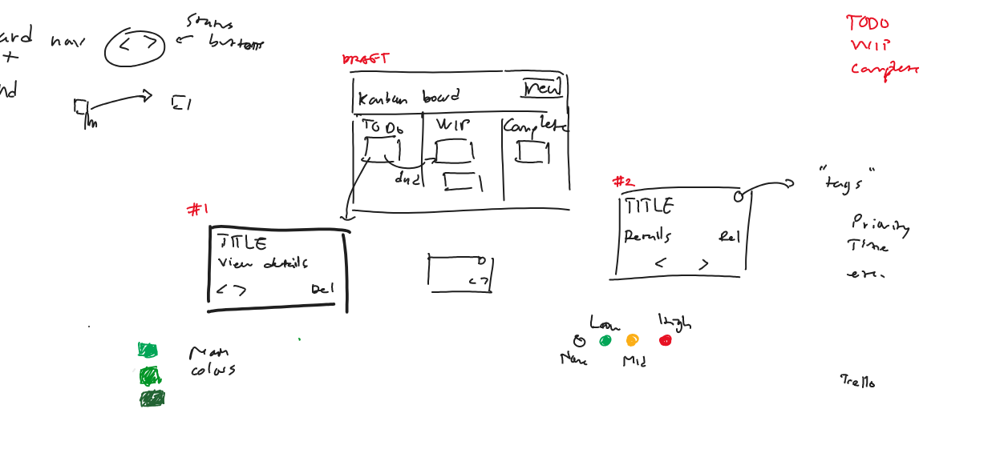
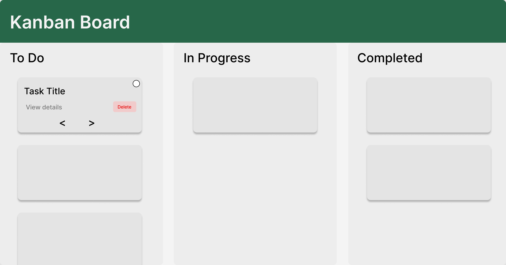
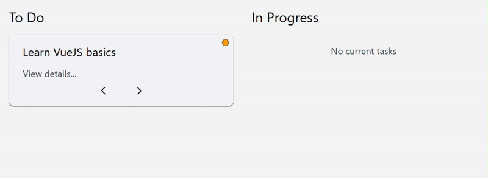
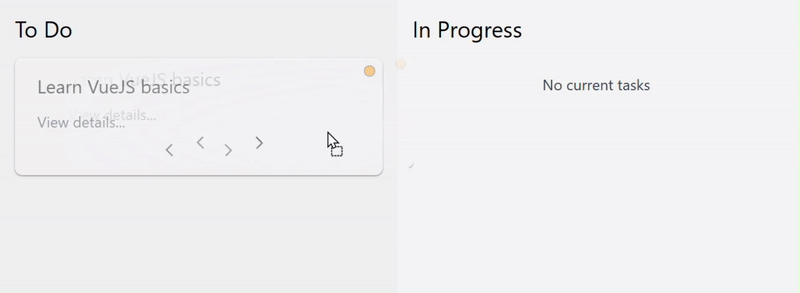
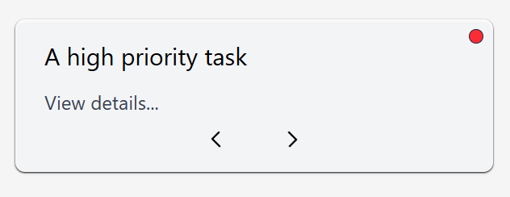

Kanban-inspired task tracker
Managing tasks is a central part of day to day life, but it often feels difficult.
I wanted to create an app that makes creating and managing tasks easy.
An offline task board that supports both keyboard navigation and drag-and-drop behavior.
While this app might not be able to instantly cure procrastination, it can help manage tasks more effectively.
Initial designs
The goal was a task board representing three states: To Do, Work in Progress, and Completed.
Early sketches explored different layout and card compositions.
From these explorations, I decided on a three-sectioned layout with minimal card controls, prioritizing clarity and keyboard accessibility.
This decision was translated into a low-fidelity Figma prototype to further validate the structure and flow between the components.
It's purpose is to allow immediate implementation rather than visual polish, ensuring the design can be built without ambiguity.
Interactions as a primary feature
A core challenge was balancing drag-and-drop behavior with a keyboard-first workflow.
Tasks can be moved between columns using either method, without one feeling like a secondary or compromised experience.
Implementing keyboard-first interactions
I decided to add two arrow buttons on the bottom of each task card.
The design is made to be intuitive, requiring no additional visual hints.
Focus states are refined to look visually appealing while still being accessible.
Implementing drag-and-drop
I used react-dnd to implement custom drag-and-drop features.
The cards act as a draggable object, and the columns act as drop targets, allowing smooth movement between columns.
Both interaction methods update the same state, ensuring consistent behavior regardless of input.
Adding a tag system
Each task includes a tag, visually represented as a small dot at the upper right corner of each task card.
Tags can be set to Low, Medium, High, or left uncategorized, and intentionally do not carry a predefined meaning.
Rather than hard-coding labels such as "difficulty", interpretation is left to the user. A tag can represent priority, effort, estimated time, or other personal criteria.
One possible interpretation of the tags, being "priority".
Finished product
The tags are a central part of the app. For you, what would the tags represent best?